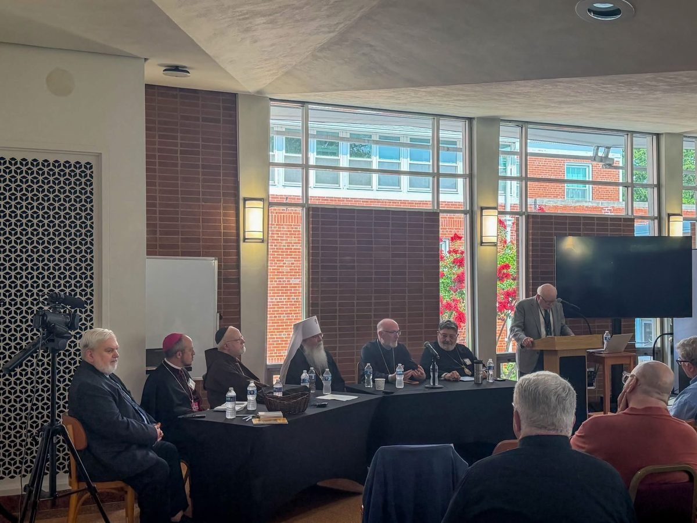
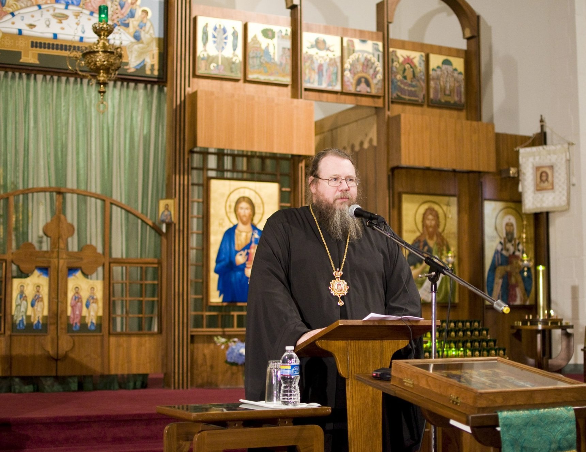
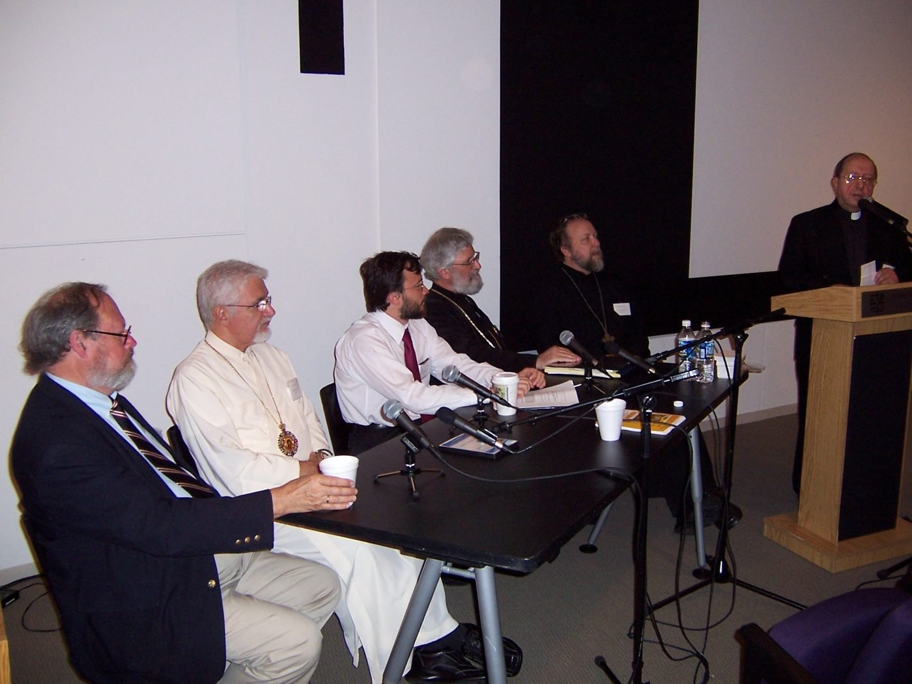
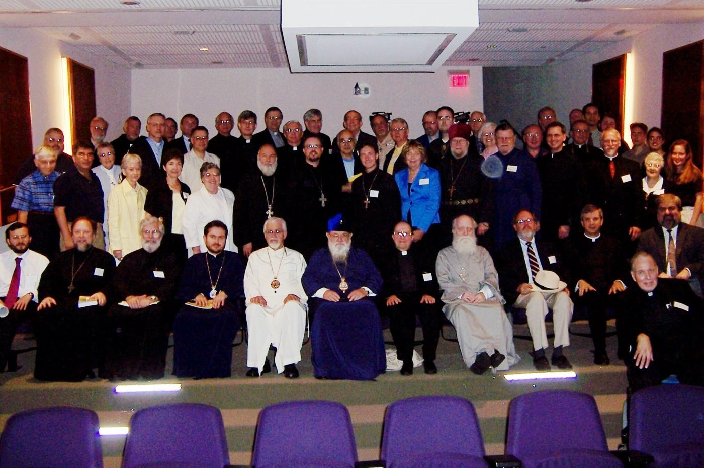
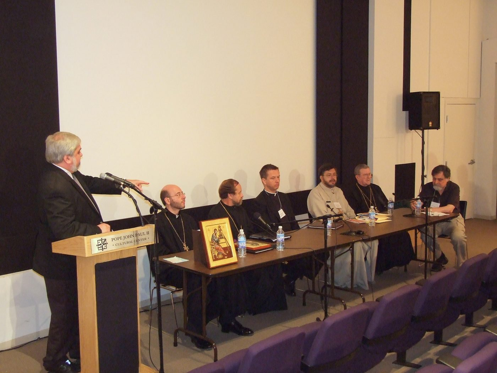

Conferences & Lectures
Gathering East and West in one place
Institute students take part in the annual Orientale Lumen Conference of the Orientale Lumen Foundation, and the Institute adds its own lecture series through the academic year.
Orientale Lumen XXX panel, July 2026, (L to R) Jack Figel, Archbishop Flavio Pace, Cardinal Seán O’Malley, Metropolitan Tikhon, Bishop Anthony Vrame, and Bishop John Michael Botean, with moderator Dr. John Borelli of Georgetown University.
The Institute is in its founding phase. The programs on this page are in development and will open in stages.
The Orientale Lumen Conference
A seat at the conference, as part of the course
Each summer the conference gathers Catholic and Orthodox bishops, scholars, and laypeople for lectures, a panel, and shared prayer. Institute students attend at a reduced rate.
- Theme
- A new theme each year on the state of Catholic-Orthodox dialogue
- Format
- Plenary lectures, a panel discussion, and prayer together
- Attendance
- In person and online
- For students
- Reduced registration for Institute students

Quarterly Lecture Series
Three academic seminars per year plus special events
Fall
Spirituality Symposium
Winter
Biblical Studies Conference
Spring
Contemporary Theological Thought
Special events
Special Guest Lectures
On current ecumenical issues
The Orientale Lumen Conference is organized by the Orientale Lumen Foundation. The lecture series is the Institute’s own. Looking for pilgrimages? Institute pilgrimages are part of Spiritual Formation.



Interest list
Hear about the next conference
We will write when the first conference and lecture dates are set.
 Likoudis Legacy Foundation
Likoudis Legacy Foundation